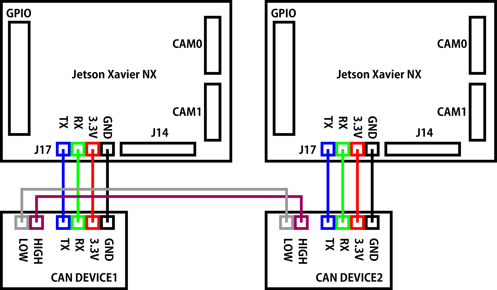
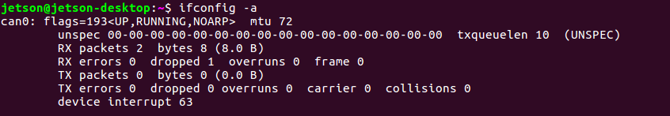
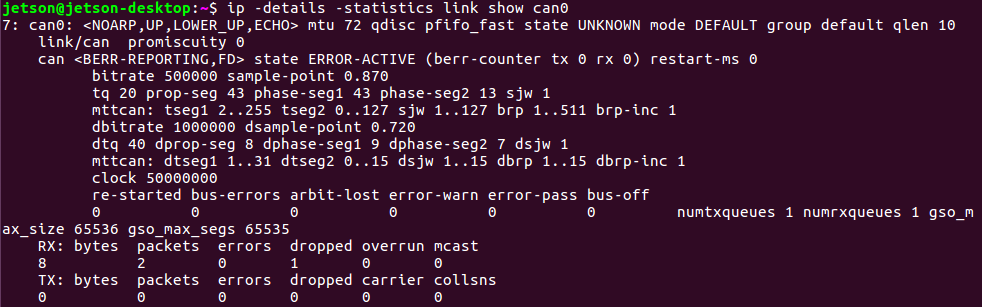
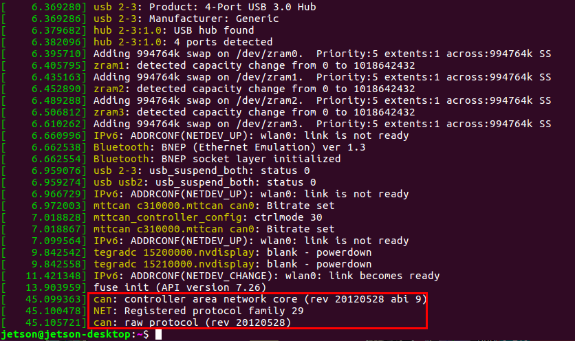

CAN 有効化
CANとは
Controller Area Network(CAN)は、BOSCHが開発したマルチマスターのメッセージブロードキャストシステム。1メガビット/秒(bps)の最大シグナリングレートを規定しています。 USBやイーサネットなどの従来のネットワークとは異なり、CANは大きなブロックのデータを送りません。CANは中央バスマスタの監視下にあり、ノードAからノードBへのポイント to ポイント通信を行います。 CANネットワークでは、温度やRPMなどの短いメッセージがネットワーク全体にブロードキャストされるため、システムのすべてのノードでデータの一貫性が確保されます。
参考： * Introduction to the Controller Area Network(CAN)
メモ
- JetPack 3.2/TX2 CAN有効化
- TX2の時と同じ流れで、NXはCAN0のみ
- JetPack 3.1以降はCANモジュールはカーネルに組み込まれている
- blacklist を解除する
- interfaces を追加する
- 配線が重要
- NXP TJA1050は5V
- TI SN65HVD230は3.3V/5V互換
- CANは5Vが主流だが、TIは3.3Vで動作するチップを用意。これにより消費電力を50%削減
- TX2フォーラムを見ると不安定になりやすいらしい
- デバイス間はGND接続もしたほうがいい
- Jetson Xavier NXでは3.3Vを使う
- TI SN65HVD230は2Vでも動作するが、HIGH/LOW電圧差に必要な2.45Vを出すことができなくなり、通信エラーの原因となる
- 3.3Vの電源電圧を安定させるために、ブーストレギュレータにはTPS60204 or TPS60205、もしくはsynch-pinsが必要ならTPS60100を使う
- Jetson Xavier NX Developer KitにはJ17にL字型の4PINのハンダ付けが必要
- CAN bus without CAN Ground. Could be working with isolated node?
- nvidia developer forumのようにNXから出ていないCAN1のpinmux registerを変更する必要はなく、最初からJ17 CANが使えるように設定されている。
check commands
1 2 3 4 5 6 | |
状態の確認ではdmesgが最も重要。 それ以外はあまり役に立たない。
配線

1台目のJetson NX
- Jetson NX 3.3V - CANdevice1 VCC
- Jetson NX GND - CANdevice1 GND
- Jetson NX CAN TR - CANdevice1 TR
- Jetson NX CAN TX - CANdevice1 TX
2台目のJetson NX
- Jetson NX 3.3V - CANdevice2 VCC
- Jetson NX GND - CANdevice2 GND
- Jetson NX CAN TR - CANdevice2 TR
- Jetson NX CAN TX - CANdevice2 TX
CANデバイス間の配線（GNDも付けた方がいい）
- CANdevice1 CANH - CANdevie2 CANH
- CANdevice1 CANL - CANdevie2 CANL
setup
- blacklist mttcanをコメントにする
1 | |
before:
1 | |
after:
1 | |
- can0インターフェースを追加する FDだと5Mbpsになっているとのことなので、TX2では2Mbpsの2000000にしていた部分をNXでは5000000にしてインターフェースを作りたい所ですが、ここはTegraMTTCAN driverとチップに依存するため、TI SN65HVD230の1Mbps仕様に合わせて1000000とします。
1 | |
ファイル内容
1 2 3 4 5 | |
インターフェース追加しない場合は、再起動の都度下記コマンドでcan0、ビットレートを設定して立ち上げます。
1 2 | |
- 再起動
1 | |
ifconfig確認
1 | |
/etc/modprobe.d/blacklist-mttcan.confのブラックリストをコメントアウトして再起動するとifconfigでcanが表示されるようになります。

ステータス確認
1 | |
で得られるステータスについて
- can state ERROR-ACTIVE
- CANコントローラはエラーアクティブ状態に初期化されます。この状態には名前に"ERROR"という単語が含まれていますが、エラーがあるわけではありません。
- can state ERROR-PASSIVE
- CANコントローラがエラーパッシブ状態にある場合、コントローラまたはその接続に潜在的な問題があるため、エラーフレームを送信することは出来ません。
- can state BUSS-OFF
- CANコントローラが通信エラーを検出したときに、バストラフィックを説教的に廃棄せずにバスオフにします。CANコントローラはバストラフィックに全く関与しなくなります。
- can state STOPPED

dmesg確認
通信が成功すれば以下のようなログになります。
1 2 3 | |

動作確認
1台目のNXターミナル
1 | |
2台目のNXターミナル
1 | |
データ受信時
1 | |
トラブルシューティング
- dmesgを見るとエラーが出ていて、データ通信が出来ない
【原因】
CANデータ送信時にデバイスを使う事が出来なかった。
【解決方法】
NXを再起動してください。
参考
https://devtalk.nvidia.com/default/topic/1025010/jetson-tx2/how-to-use-can-on-jetson-tx2-/ https://devtalk.nvidia.com/default/topic/1027411/jetson-tx2/tx2-can-error-entered-bus-off-state/ https://devtalk.nvidia.com/default/topic/1011148/enable-can-bus-on-jetson-tx2/?offset=5 https://devtalk.nvidia.com/default/topic/1019795/jetson-tx2/jetpack-3-1-can-bus-support/ http://www.ti.com/lit/an/sloa101b/sloa101b.pdf https://www.nxp.com/docs/en/data-sheet/TJA1050.pdf https://forums.developer.nvidia.com/t/how-to-using-can-in-nx-devkit/124153 https://docs.nvidia.com/drive/drive_os_5.1.6.1L/nvvib_docs/index.html#page/DRIVE_OS_Linux_SDK_Development_Guide/System%20Programming/sys_components_tegra_can.html